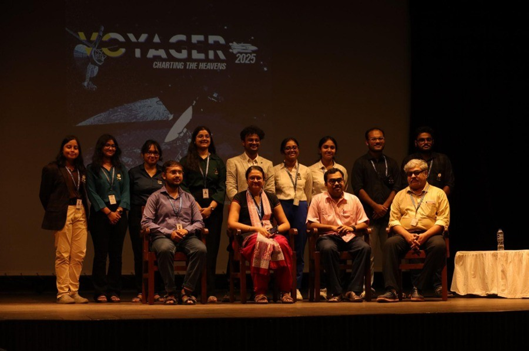

Voyager 2025 initiated the Xaverian Astronomical Society’s journey in the session 2025–26 and celebrated the remarkable contributions of Father Eugene Lafont in advancing astronomy at St. Xavier's College (Autonomous), Kolkata, through the customary Father Eugene Lafont Memorial Lecture. On September 16; the very first day of the Voyager 2025 program, the students and dignitaries gathered with a sense of anticipation and excitement at the Fr. Depelchin Auditorium. The day began with the solemn inauguration by Father Principal Rev. Dr. Dominic Savio, SJ, whose words set the tone for the intellectual journey that lay ahead and reminded everyone of the deep connection between human curiosity and the mysteries of the cosmos.
Continuing the program, the Deputy President of XAS, Dr. Suparna Roychowdhury, delivered her inspiring address, bridging the theme of the event and the motivation behind it. It was followed by the address of the Assistant Director of FELO and Head of the Department of Physics, Dr. Shibaji Banerjee, compelling the audience to a verbal tour of the history of FELO and Fr. Eugene Lafont's contributions - emphasizing the importance of astronomy as a way of nurturing wonder and humility.

Have We Understood Gravity?
The felicitation of the day’s esteemed speaker, Dr. Sumanta Chakraborty, Assistant Professor, Indian Association for the Cultivation of Science (IACS), Kolkata, was carried out with warmth and gratitude. Dr. Chakraborty then took the stage for his session exploring the journey of gravitational physics, from the pioneers who built its foundations to modern advances like the Event Horizon Telescope and gravitational wave detectors.
He highlighted unanswered questions that still shape the field, reminding us that gravity, though the oldest known force, continues to present new mysteries. His delightful talk inspired the audience with deep knowledge and passion for astrophysics.
Solar and Stellar Dynamics
The second day, held at the Dr. Ranjan Ray Lab for Computational Physics, featured Dr. Samriddhi Sankar Maity, who discussed solar cycles and magnetohydrodynamics. His lecture illuminated the delicate balance maintained by the Sun’s magnetic field and the profound effects of solar flares on Earth.
This was followed by a session on stellar astrophysics with Dr. Gourab Banerjee, where students explored the classification of stars by their spectra. By analyzing spectral plots of stars like Sirius and Regulus, participants decoded the chemical compositions of distant suns.
Together, these sessions exemplified the desire to understand the universe in all of its dimensions; to decode the Sidera Silentia: The Silence between the Stars.